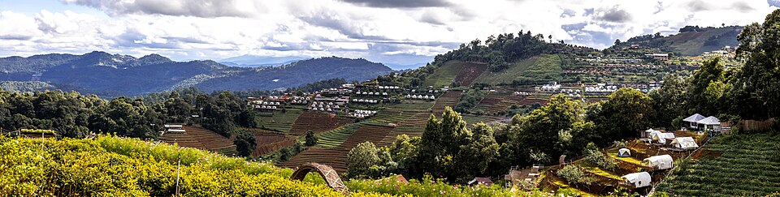
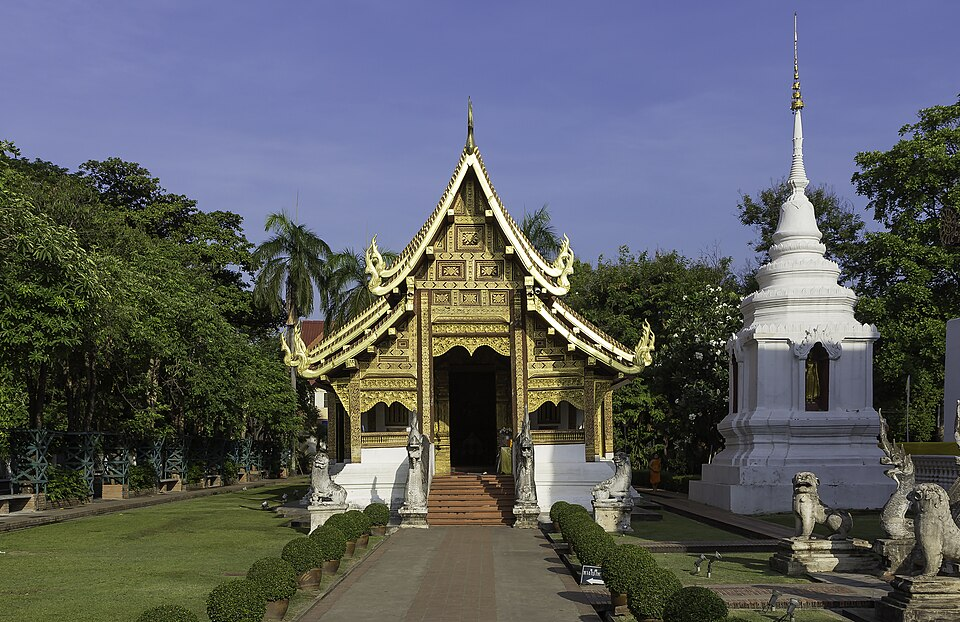
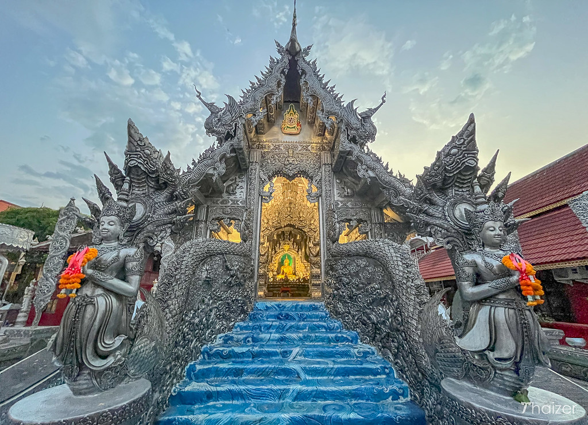
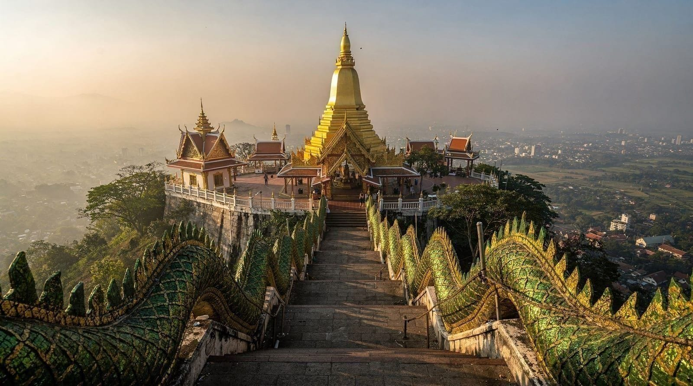
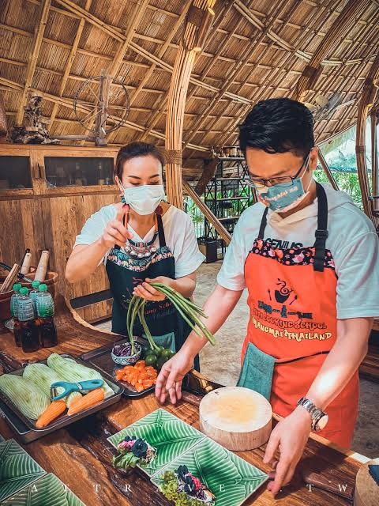
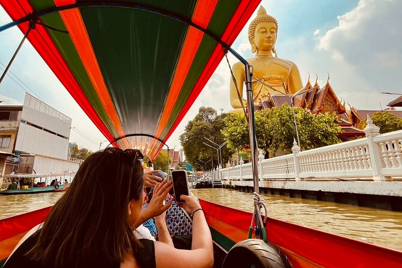
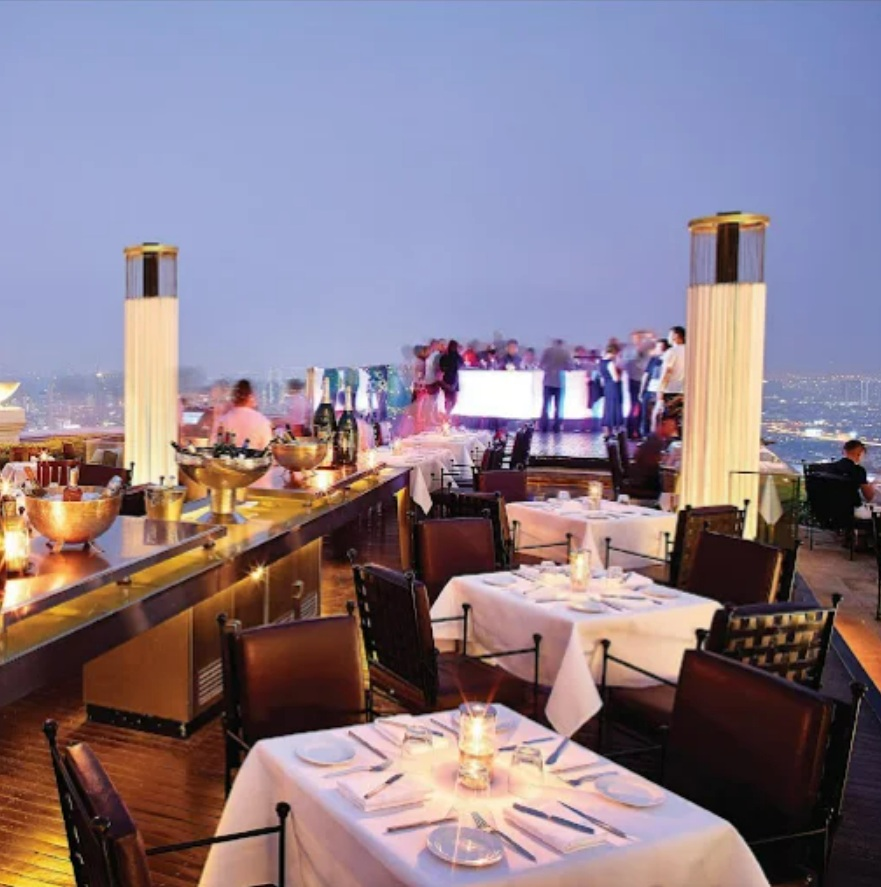

整體節奏一覽
機票
兩人都直飛清邁，落地時間盡量接近；國內線只需 1 段（清邁 → 曼谷）。
| 去程 | 航班 | 時間 | 金額（每人） |
|---|---|---|---|
| 🌼（TPE → CNX） | CI851 | 07:20 → 10:25 | NT$15,945 |
| 😈（PVG → CNX） | 9C8511 | 16:15 → 20:15 | — |
| 🌼先到約 10 小時，會合方式：🌼先入住、在古城自由活動；傍晚再回機場接😈，兩人碰面後直接前往晚餐地點。 | |||
| 國內線 12/29 | 航班 | 時間 | 金額 |
|---|---|---|---|
| CNX → DMK | 泰國獅航 | 13:30 → 14:45 | NT$2,467 |
| 回程 1/2 | 航班 | 時間 | 金額 |
|---|---|---|---|
| 🌼 BKK → TPE | 泰航 | 12:40 → 17:20 | NT$9,307 |
| 😈 BKK → PVG | 春秋 | 12:45 → 18:05 | NT$5,130 |
旅遊風格
古城慢遊＋山林或手作＋曼谷玩樂＋河畔跨年。12 月是清邁一年中最舒適的月份，行程以步行、摩托車為主，體力負擔最小；第 4 天讓😈從四個選項中挑一個當天主題。
👍 強項
- 文化體驗最豐富：古城寺廟、騎摩托車遊城內外、週末早市與週六 / 週日夜市
- 12 月清邁涼爽乾燥，一年最舒服的時候
- 平路、城市為主，體力負擔最小
- 12/28 四選一，讓😈主導這一天
- 只住 2 間飯店，國內線只要 1 段
👎 劣勢
- 幾乎沒有海
- 😈從上海直飛清邁班次較少（9C8511，16:15→20:15），兩人落地時間差約 10 小時
- 若選茵他儂，12/28 要 05:30 出發，山頂清晨 5–10°C
- 大象保護園旺季名額少，需提前 1–2 個月訂
每日規劃


城內：騎乘古城與護城河一圈
護城河環繞的古城本身就是最美的路線，傍晚沿著河邊騎乘還能遇上落日餘暉。

城外：近郊山區兜風（例如 Mae Rim / Mon Cham 方向）
若想騎遠一點，清邁近郊有不少山區茶園、稻田與觀景咖啡廳，單程約 1 小時車程，適合安排半天來回。

Wat Phra Singh 帕辛寺
典型蘭納式金色屋簷佛寺，若選擇城內路線會經過的第一站，白色主殿與金色屋頂對比鮮明。

Wat Sri Suphan 銀廟
通體以銀／鋁皮手工敲製裝飾的寺廟，工藝細膩。主殿僅開放男性進入，女性可在外觀賞外牆雕刻。
必看：整面純銀雕花外牆、Wua Lai 銀器街夜市現場工藝品

Wat Phra That Doi Suthep 雙龍寺
清邁地標山頂寺廟，金色佛塔在陽光下極為耀眼，可俯瞰整個清邁市區。攻頂需爬 306 階那伽（Naga）雕像階梯。
必看：金色主塔、俯瞰清邁市景、階梯兩側的那伽（蛇神）雕像
| 選項 | 內容 | 備註 |
|---|---|---|
| A. 茵他儂國家公園 | 泰國最高峰（2,565m）、雙皇塔、Kew Mae Pan 步道（需嚮導）、Wachirathan 瀑布 | 05:30 出發，山頂 5–10°C 需保暖 |
| B. 大象自然公園 | 不騎乘、以觀察與照護為主的道德式大象保護園 | 約 2,500 THB/人，旺季須提前 1–2 個月訂 |
| C. 泰式料理課 | 市場採買＋農場參觀，動手做 4–6 道菜，辣度可調整 | — |
| D. 情侶銀戒手作 | Nova ArtLab 銀匠工作坊，親手打造專屬對戒 | 約 US$49 起 |
四個選項晚上都會合流：按摩 ＋ Tong Tem Toh 或 Gongkham 晚餐。



選項 C：泰式料理課
從市場採買到動手下廚，體驗 4–6 道泰式料理的完整製作過程。

選項 D：情侶銀戒手作
從打磨、塑形到拋光，親手完成一枚屬於兩人的紀念銀戒。


（可選）Thonburi 運河長尾船遊
穿梭曼谷後花園般的運河水巷，體驗在地水上生活風貌。


昭披耶河跨年煙火
午夜時分沿河兩岸多處同步施放煙火，河面倒影加上兩岸摩天大樓燈光，是曼谷跨年最具代表性的畫面。


A. Sirocco 天台餐廳
曼谷最具代表性的露天天台餐廳之一，可俯瞰昭披耶河與城市夜景，是收尾晚餐的浪漫選擇。
🌼 12:40 BKK→TPE（泰航）；😈 12:45 BKK→PVG（春秋）。
建議體驗活動
行程節奏
整體強弱交替：抵達日輕鬆 → 週末市集熱鬧 → 寺廟文化 → 四選一（依選項調整強度）→ 移動日休息 → 曼谷玩樂 → 跨年高峰 → 收尾放鬆。避免連續多天同一種風格，逛街、活動、景點穿插安排。
輕鬆
較強
輕鬆
中強（依選擇）
移動日
中強
跨年高峰
輕鬆收尾
預算（兩人合計，新台幣）
| 項目 | 最低 | 最高 |
|---|---|---|
| 機票 | 35,000 | 56,000 |
| 住宿（8 晚） | 17,200 | 56,000 |
| 當地交通 | 3,000 | 9,000 |
| 餐飲 | 10,000 | 30,000 |
| 門票活動 | 6,000 | 25,000 |
| 雜支 | 4,000 | 12,000 |
| 合計 | 75,200 | 188,000 |
住宿
清邁（建議古城東側 / 塔佩門一帶）
| 價位 | 飯店 | 參考價 |
|---|---|---|
| 精品 | Tamarind Village | US$137–197 |
| 中高 | U Nimman | US$104–218 |
| 中價 | Art Mai Gallery / NORN | NT$2,500–4,000 |
| 平價 | 古城區青旅 / 民宿 | NT$1,200–2,000 |
曼谷（建議河濱區，便於跨年看煙火）
| 飯店 | 特色 |
|---|---|
| Riva Surya | 河景，鄰近 Wat Arun |
| Avani+ Riverside | 無邊際泳池 |
| Chatrium Riverside | 大坪數房型 |